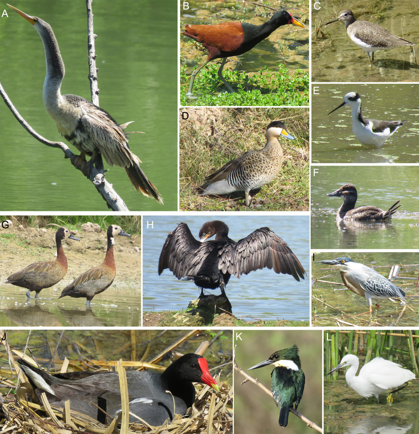

Son aquellas especies de aves cuyo hábitat se limita fundamentalmente a las zonas húmedas o a las masas de agua dulce o salada, como lagos, rios, mares, etc.
Las aves acuáticas se caracterizan generalmente por la presencia de adaptaciones anatómicas al medio acuático, como patas con una membrana interdigital, patas alargadas, alas adaptadas para nadar, picos largos o en forma de espátula adaptados para alimentarse en el agua y la capacidad de bucear y nadar bajo el agua durante períodos más o menos largos.
